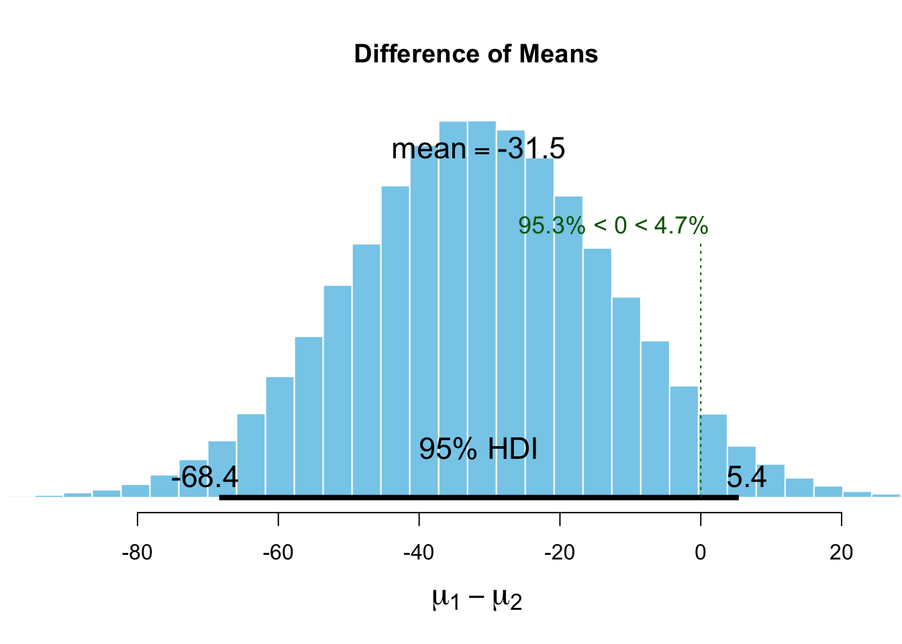

Sociometer analysis
Benjamin Holding
Descriptive statistics
sociometric.tagged %>% group_by(SD) %>% dplyr::summarise(mean(speech_profile_total_speaking),sd(speech_profile_total_speaking)) %>% print.data.frame()## SD mean(speech_profile_total_speaking) sd(speech_profile_total_speaking)
## 1 0 649.6852 127.3773
## 2 1 616.1271 116.4013sociometric.tagged %>% group_by(SD) %>% dplyr::summarise(mean(audio_front_volume_SCALED),sd(audio_front_volume_SCALED)) ## # A tibble: 2 x 3
## SD `mean(audio_front_volume_SCALED)` `sd(audio_front_volume_SCALED)`
## <int> <dbl> <dbl>
## 1 0 0.0131 1.05
## 2 1 -0.0136 0.951sociometric.tagged %>% group_by(SD) %>% dplyr::summarise(mean(audio_front_vol_consistency_SCALED),sd(audio_front_vol_consistency_SCALED)) ## # A tibble: 2 x 3
## SD `mean(audio_front_vol_consistency_SCALED)` `sd(audio_front_vol_co…
## <int> <dbl> <dbl>
## 1 0 -0.0442 0.992
## 2 1 0.0457 1.01Analysis
Total speaking time
#set the priors
Speaking.priors <- list(muM = 1050, muSD = 525)
# run the bayesian 't-test'
Speaking_best <- BESTmcmc(sociometric.tagged$speech_profile_total_speaking[sociometric.tagged$SD ==1],
sociometric.tagged$speech_profile_total_speaking[sociometric.tagged$SD ==0],
priors = Speaking.priors,
parallel = T)## Waiting for parallel processing to complete...done.# check the output
speaking.summary <- summary(Speaking_best)
speaking.summary## mean median mode HDI% HDIlo HDIup compVal %>compVal
## mu1 617.612 617.628 617.545 95 592.481 643.3252
## mu2 649.119 649.103 648.459 95 622.041 675.8795
## muDiff -31.507 -31.521 -31.636 95 -68.401 5.4018 0 4.72
## sigma1 113.695 113.223 111.802 95 94.830 133.7319
## sigma2 123.737 123.347 122.414 95 102.534 145.6126
## sigmaDiff -10.042 -10.016 -10.399 95 -37.205 17.6604 0 23.37
## nu 38.607 30.039 14.612 95 3.931 98.2869
## log10nu 1.472 1.478 1.481 95 0.873 2.0841
## effSz -0.265 -0.265 -0.262 95 -0.575 0.0455 0 4.72#Creating a plot of the posterior distribution for the difference between groups
plot(Speaking_best) #the probability that the true value is smaller than zero = 95.5%
#is the model a reasonable description of the data?
plotPostPred(Speaking_best)
#to see all plots
plotAll(Speaking_best)
Total volume
# run the bayesian 't-test'
total_volume_best <- BESTmcmc(sociometric.tagged$audio_front_volume_SCALED[sociometric.tagged$SD ==1],
sociometric.tagged$audio_front_volume_SCALED[sociometric.tagged$SD ==0],
parallel = T)## Waiting for parallel processing to complete...done.# check the output
total_volume.summary <- summary(total_volume_best)
total_volume.summary## mean median mode HDI% HDIlo HDIup compVal %>compVal
## mu1 -0.1003 -0.1016 -0.1052 95 -0.304 0.104
## mu2 -0.0815 -0.0833 -0.0971 95 -0.300 0.141
## muDiff -0.0188 -0.0186 -0.0206 95 -0.305 0.265 0 44.9
## sigma1 0.8168 0.8134 0.8015 95 0.625 1.008
## sigma2 0.9007 0.8968 0.8916 95 0.702 1.098
## sigmaDiff -0.0840 -0.0839 -0.0804 95 -0.303 0.138 0 22.3
## nu 11.2256 7.4948 5.3047 95 2.212 31.442
## log10nu 0.9293 0.8748 0.7811 95 0.459 1.536
## effSz -0.0218 -0.0217 -0.0283 95 -0.349 0.317 0 44.9#Creating a plot of the posterior distribution for the difference between groups
plot(total_volume_best)
#is the model a reasonable description of the data?
plotPostPred(total_volume_best)
#to see all plots
plotAll(total_volume_best)
Volume variation
# run the bayesian 't-test'
variation_volume_best <- BESTmcmc(sociometric.tagged$audio_front_vol_consistency_SCALED[sociometric.tagged$SD ==1],
sociometric.tagged$audio_front_vol_consistency_SCALED [sociometric.tagged$SD ==0],
parallel = T)## Waiting for parallel processing to complete...done.# check the output
variation_volume.summary <- summary(variation_volume_best)
variation_volume.summary## mean median mode HDI% HDIlo HDIup compVal %>compVal
## mu1 0.0341 0.0341 0.0336 95 -0.185 0.256
## mu2 -0.0530 -0.0533 -0.0546 95 -0.267 0.159
## muDiff 0.0871 0.0864 0.0712 95 -0.221 0.389 0 71.2
## sigma1 1.0022 0.9974 0.9928 95 0.849 1.172
## sigma2 0.9820 0.9779 0.9791 95 0.826 1.138
## sigmaDiff 0.0202 0.0198 0.0166 95 -0.201 0.245 0 57.1
## nu 47.2912 38.9616 24.8925 95 6.358 109.834
## log10nu 1.5865 1.5906 1.5714 95 1.038 2.120
## effSz 0.0879 0.0872 0.0723 95 -0.222 0.391 0 71.2#Creating a plot of the posterior distribution for the difference between groups
plot(variation_volume_best)
#is the model a reasonable description of the data?
plotPostPred(variation_volume_best)
#to see all plots
plotAll(variation_volume_best)